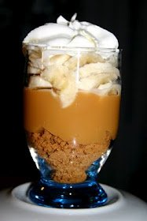

Verrines fraises bananes
Ingredients
×
- 0.5 banane
- quelques fraises
- speculoos
- chantilly

Préparation
Étape 1
Alterner dans des verrines 0.5 banane en rondelles, quelques fraises et speculoos émiettés.
Étape 2
Terminer par de la chantilly.